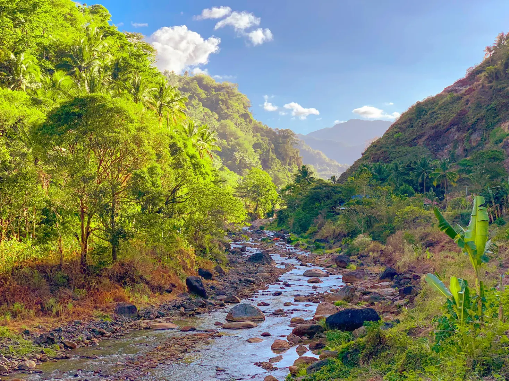
Chosen Vale
A relaxing destination surrounded by greenery and mountain views.
Travel guide
Famous destinations here in Valencia.
Where to go
Use consistent cards so every attraction is easy to compare and read on desktop or mobile.

A relaxing destination surrounded by greenery and mountain views.
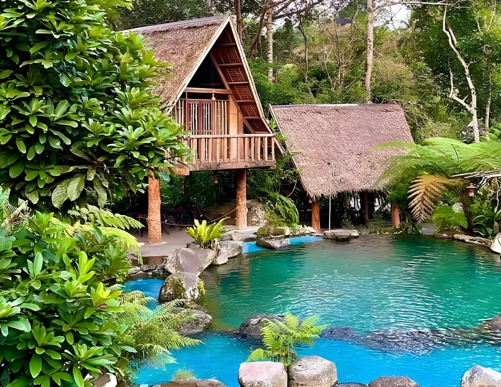
A well-known nature resort for swimming, relaxing, and family trips.
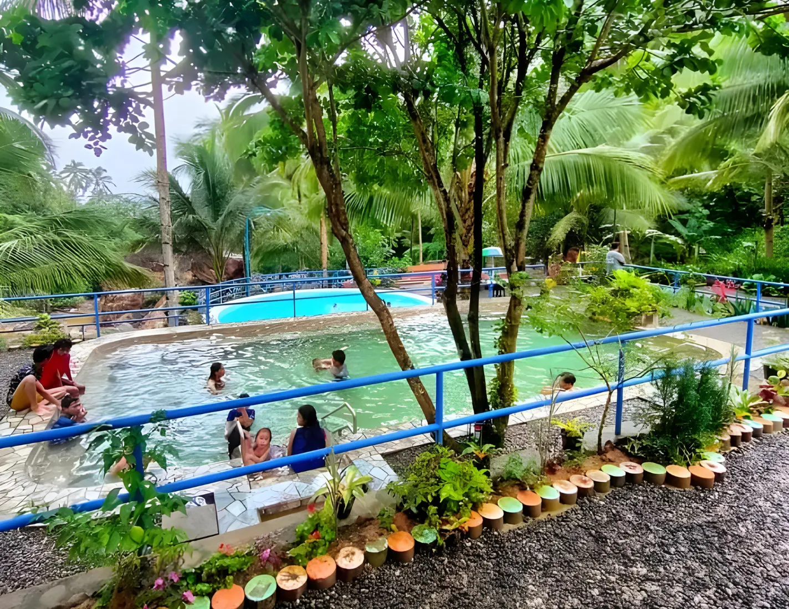
A scenic place for photos, leisure, and peaceful mountain air.
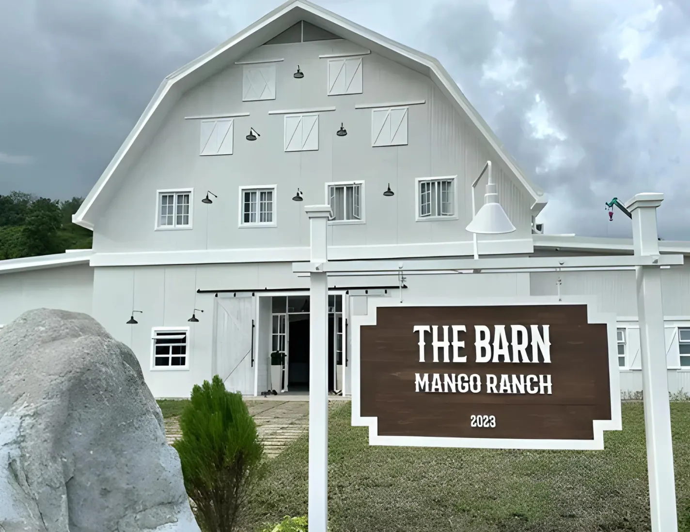
A countryside stop with open spaces and a relaxing environment.
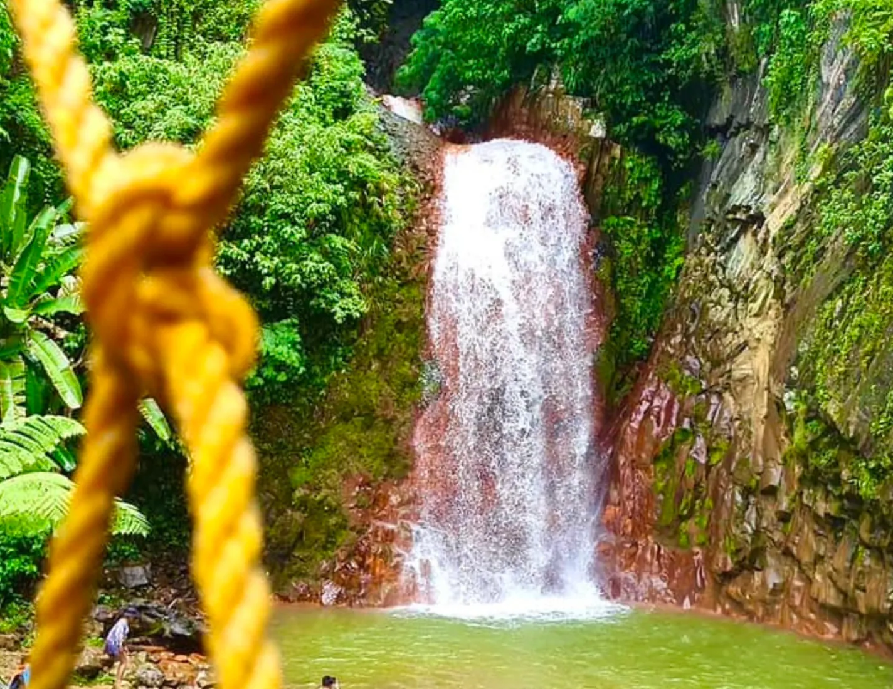
A popular waterfall destination known for its unique reddish rocks.
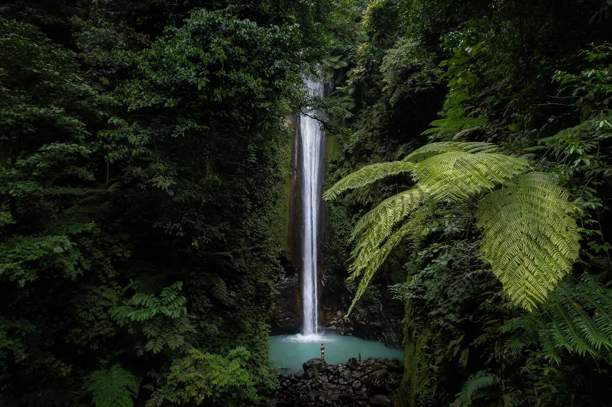
A local destination for visitors who want a quieter outdoor experience.
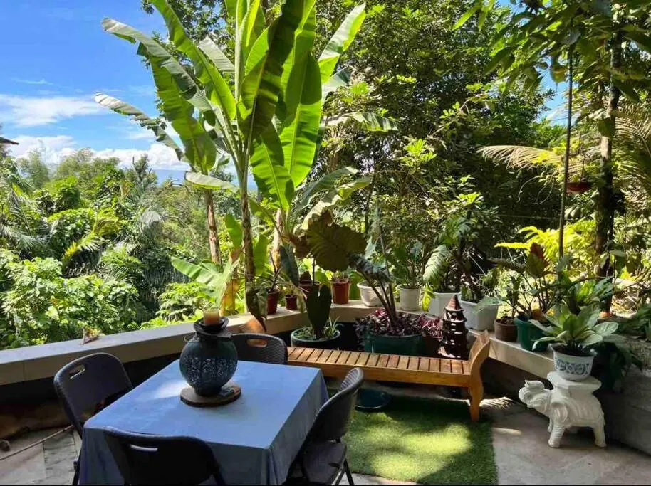
Stay overnight
Valencia has a many accommodation.
Local taste
Famous foods here in Valencia.
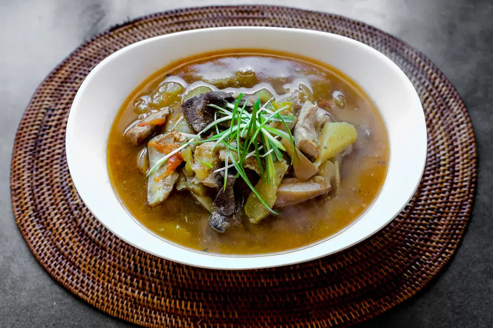
A warm soup dish with pork liver, ginger, lemongrass, and vegetables.
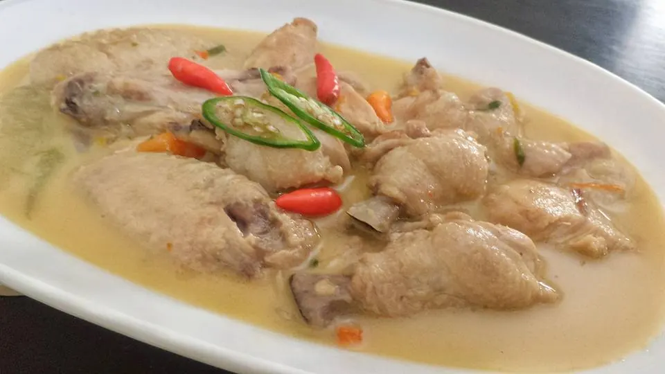
A spicy Filipino chicken dish with a fresh lemongrass aroma.
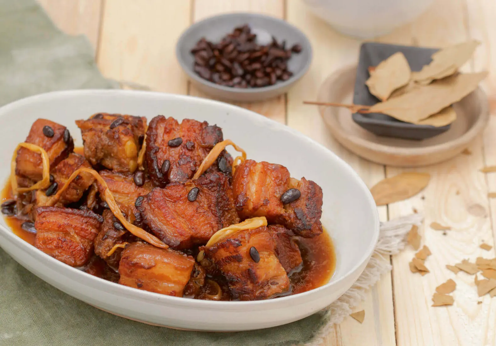
Tender pork cooked with savory-sweet sauce, beans, and spices.
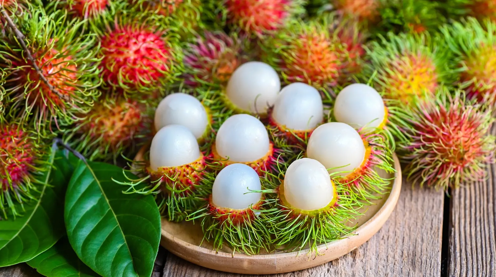
A sweet tropical fruit commonly enjoyed fresh when in season.
Getting around
Jeepneys, tricycles, and private vehicles are common ways to travel between Dumaguete and Valencia.
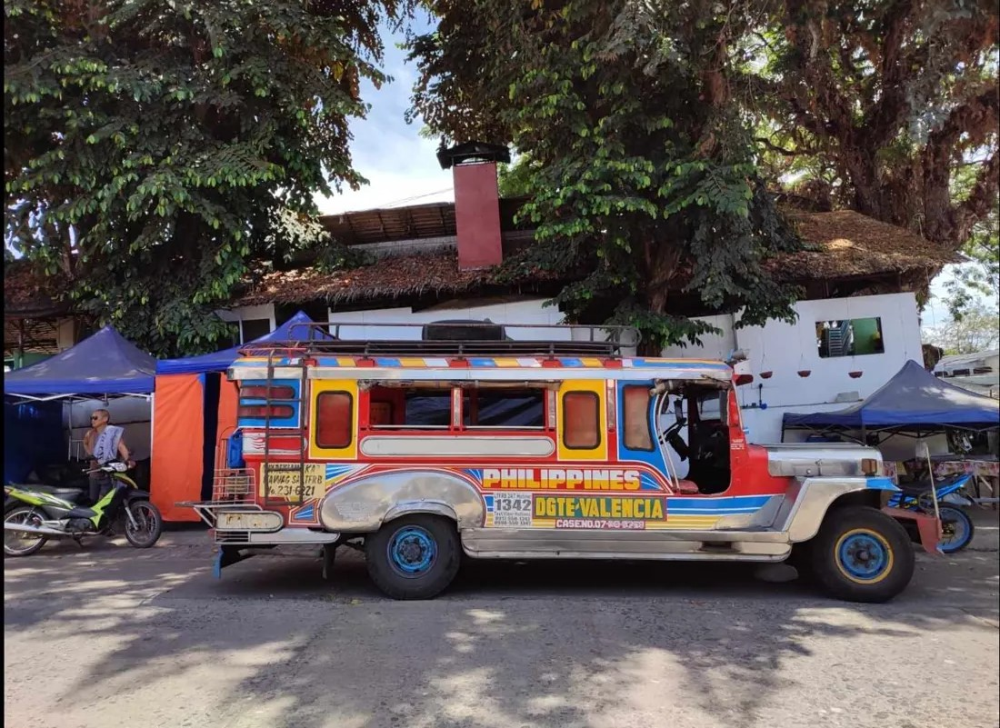